Results
Wild6D
We test our method on the Wild6D testset. Green bounding boxes show the prediction results and the red ones indicate the ground-truths.
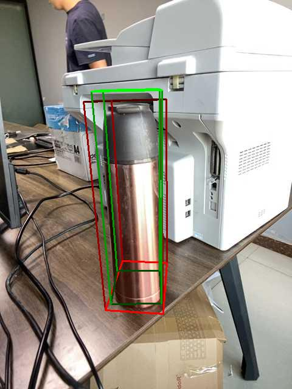
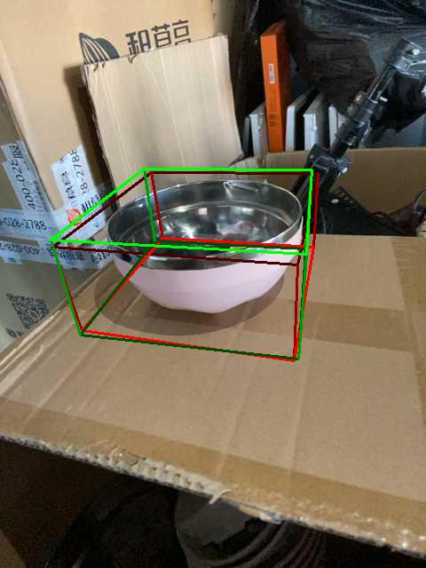

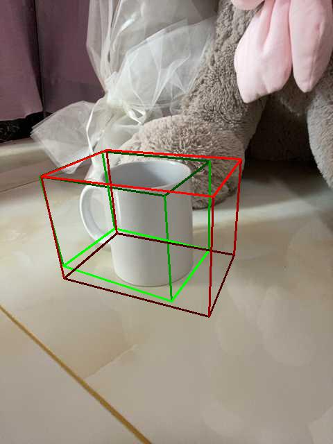
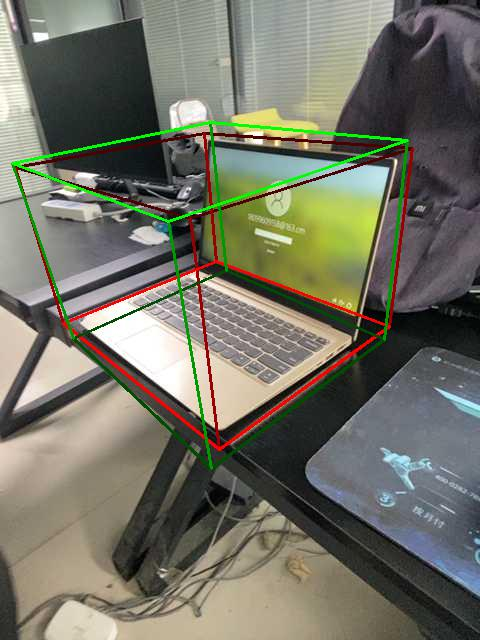
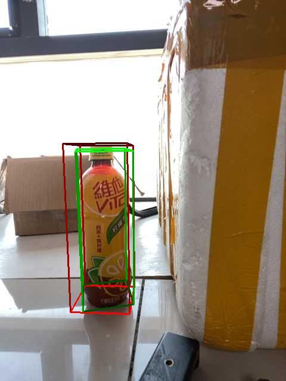
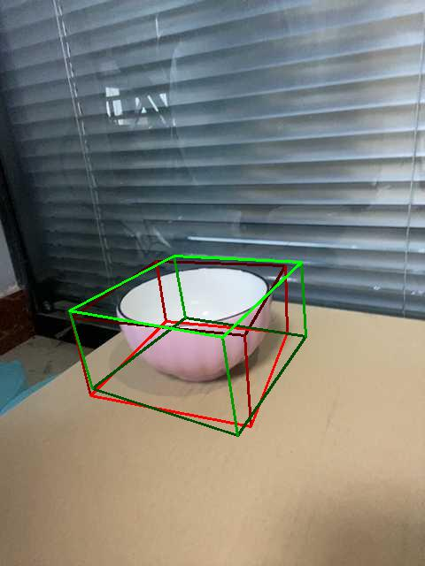
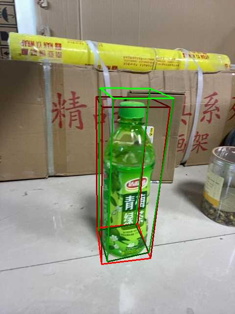

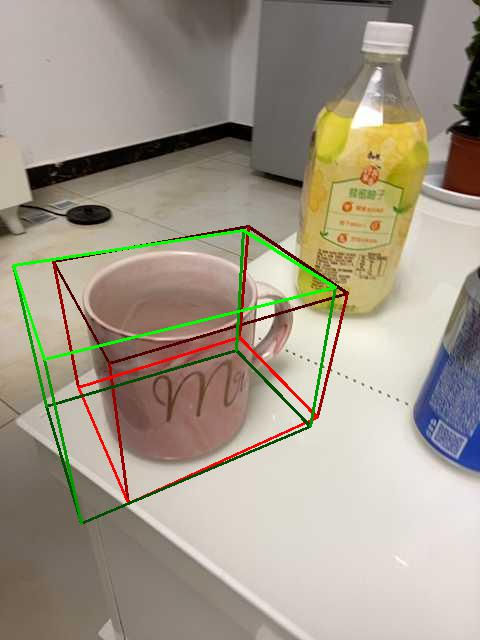
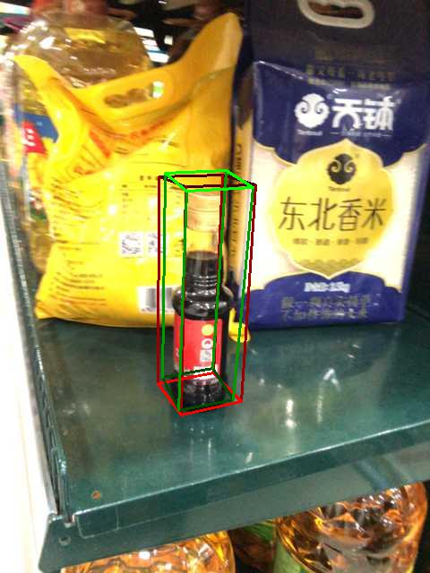
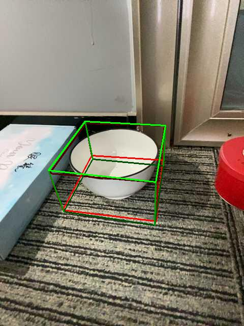

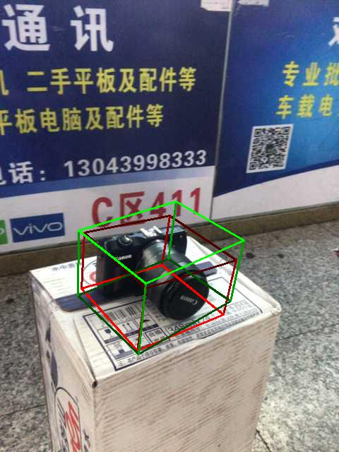
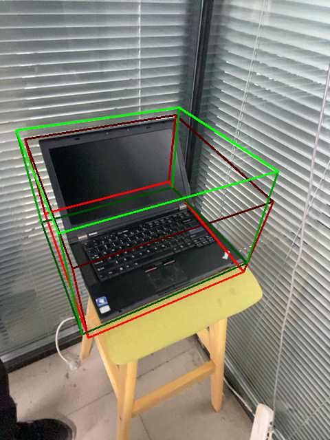
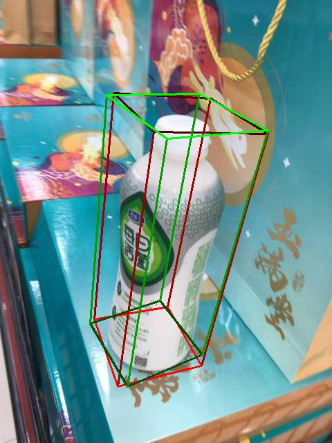

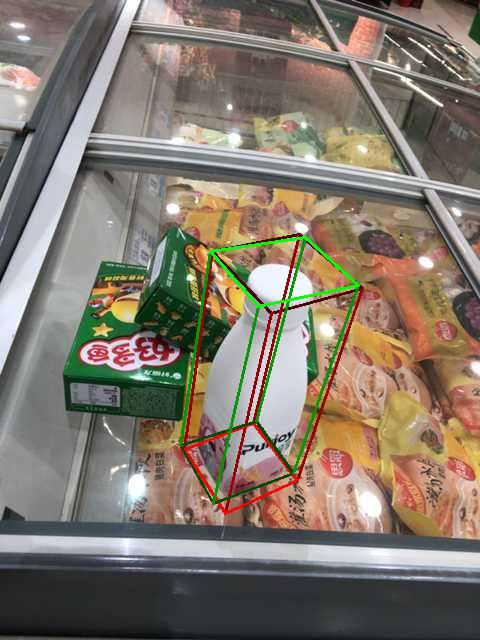
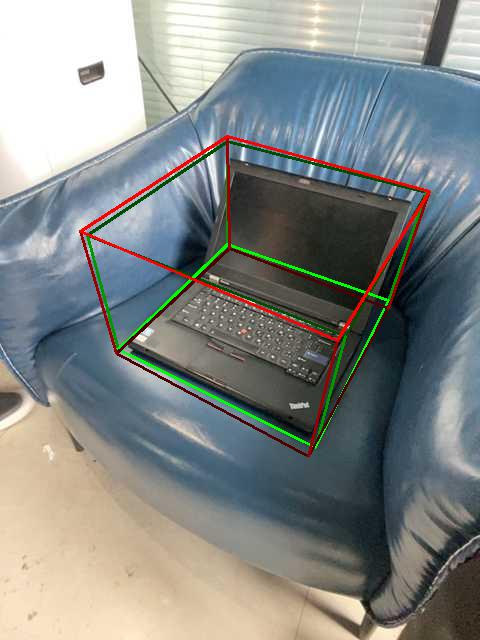
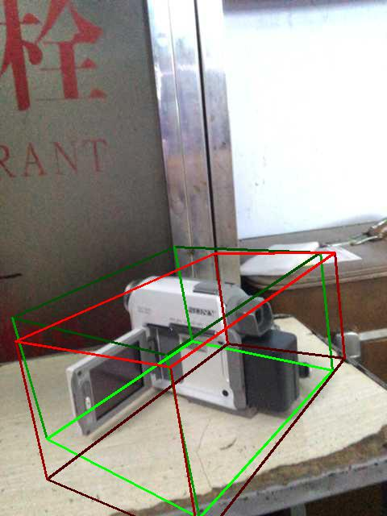
NOCS
We test our method on the NOCS REAL275 test set. Green bounding boxes show the prediction results and the red ones indicate the ground-truths.
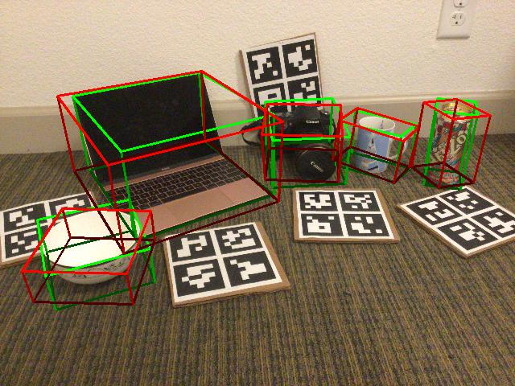
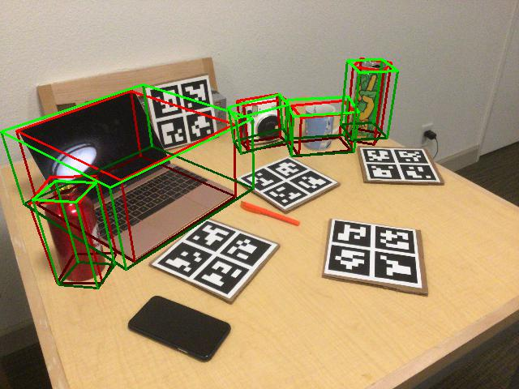
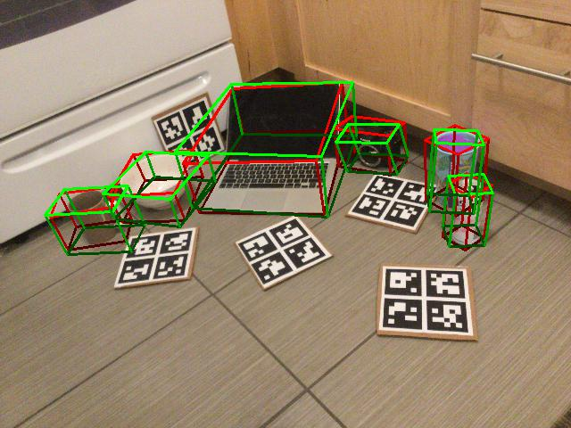
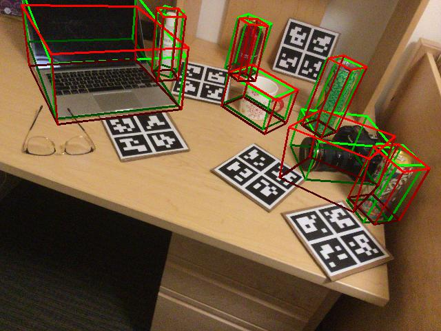
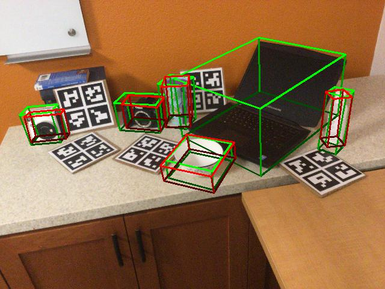
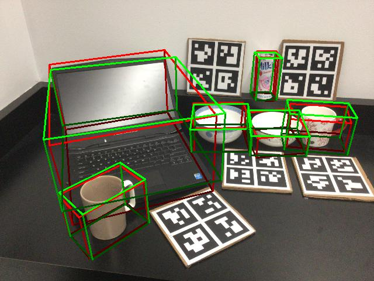
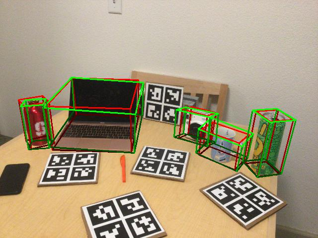